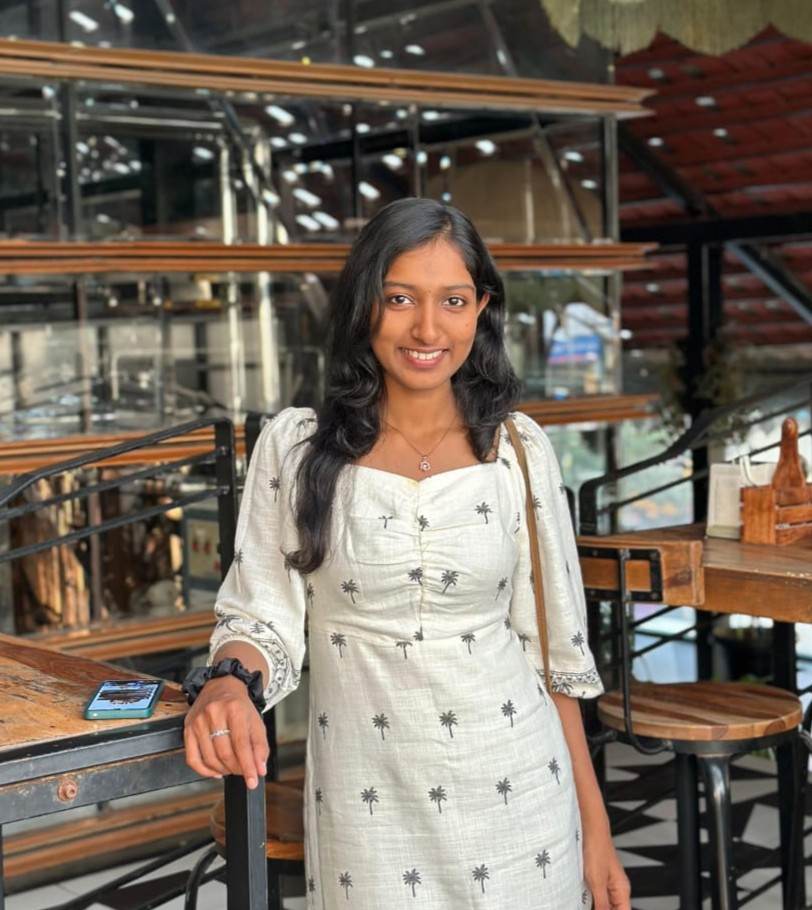
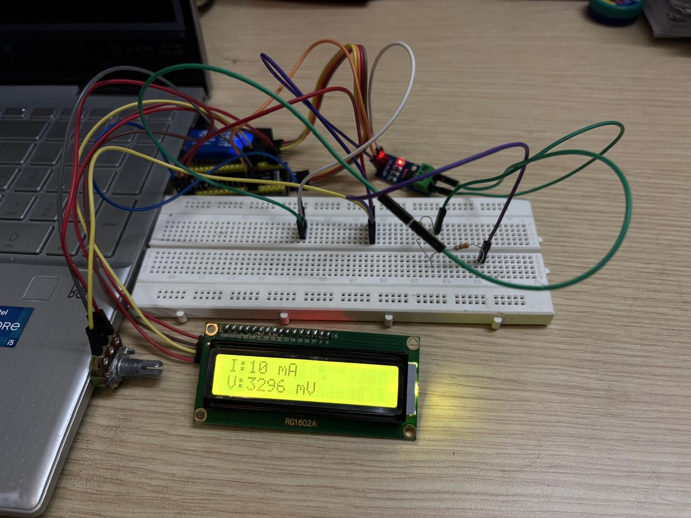
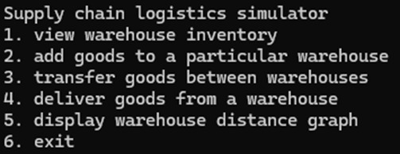
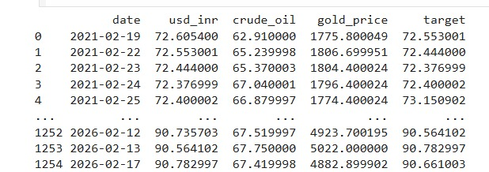
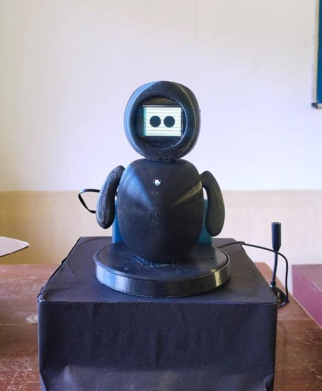
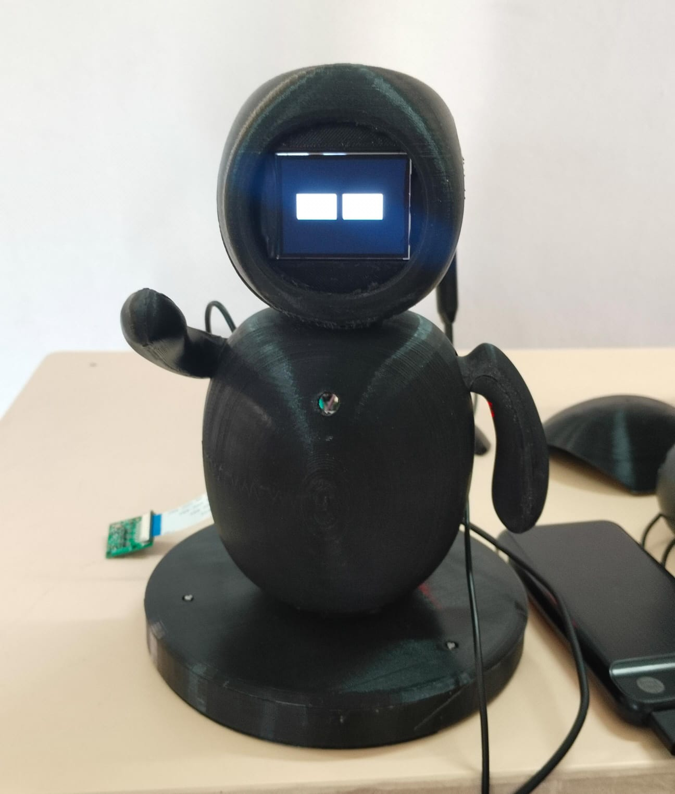

M.Tech in Embedded Systems | Electronics & Communication Engineer
I am Lakshmi KT , an M.Tech (Embedded Systems) scholar at Amrita Vishwa Vidyapeetham, Bangalore with a foundation in Electronics and Communication Engineer. My favorite part of engineering is getting hands-on with microcontrollers like STM32, Raspberry Pi, and Arduino to see my code come to life in the physical world. Throughout my academic journey , I had the opportunity to work on numerous projects, from AI-enabled companion robots for the elderly to smart irrigation systems and digital wattmeters. From my early days of building small Arduino projects to my current work with Raspberry Pi , I've always been driven by the challenge of making tech that actually solves real-world problems.
When I'm not at my workbench, you'll usually find me leading or guiding projects. I really enjoy the
process of mentoring others and seeing a team effort come together. In fact, I'm currently the Class
Representative for my M.Tech batch at Amrita Vishwa Vidyapeetham, which has been a great way to stay
involved and help my peers stay on track. I'm always looking for new challenges where I can grow as an
engineer and help others do the same

🔹 Designed and implemented a portable digital wattmeter using STM32 microcontroller to measure real-time voltage, current, and power consumption with high accuracy.
🔹 Interfaced ADC, current sensors, and LCD display to perform real-time calculations and display electrical parameters efficiently.

🔹 Developed a console-based supply chain logistics simulator in C, implementing data structures and algorithms to optimize routing and inventory flow.
🔹 Simulated real-time logistics scenarios including warehouse management, order processing, and transportation cost analysis.

🔹 Built a predictive model using machine learning techniques to forecast USD to INR exchange rate trends based on historical data.
🔹 Performed data preprocessing, feature engineering, and model evaluation to improve prediction accuracy and analyze financial trends.
🔹 Designed a real-time road anomaly detection system using Arduino , accelerometer and ultrasonic sensors to identify potholes and speed bumps.
🔹 Implemented sensor data processing and alert mechanism to improve road safety and enable smart infrastructure monitoring.

🔹 Developed an AI-enabled assistive robot for elderly care with voice interaction, medication reminders, and automated daily scheduling features.
🔹 Integrated mobility using a line-follower robotic base, enabling guided movement in indoor environments.

🔹 Designed and built a desktop robot integrated with GPT-based conversational AI for intelligent human-robot interaction.
🔹 Implemented Raspberry Pi control, servo motor actuation, and LCD display interface for expressive movement and real-time communication.
🔹 Designed a smart plant monitoring system using Arduino and environmental sensors to measure soil moisture and temperature levels.
🔹 Implemented real-time data monitoring and automated irrigation alert mechanisms to promote efficient water management.
🔹 Developed a touchless smart dustbin using Arduino and ultrasonic sensors for hygienic and automated waste disposal.
🔹 Programmed real-time distance detection to enable automatic lid opening and closing for enhanced user convenience.